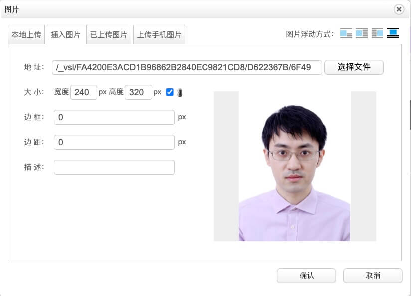

文本排版
从老师提供的 word 文档中，将文字内容，通过快捷键（比如，ctrl+c / ctrl+v）复制到网站排版界面。图片，通过界面上的相关按钮，上传并插入，此处从略。或者对已有内容做排版。
先清除文本的样式，以免出现不符合预期的排版效果。点击最左侧的4个竖排的按钮的最后一个，“一键排版”。在“一键排版”界面中，选择“常用样式 | 默认”，然后点击下方的“选择样式” 按钮。如下图所示：
还是全选所有文本，设置相关格式，如下图所示：
- 字体：微软雅黑（第1行第1个红圈）
- 字号：小四（16px）（第1行第2个红圈）
- 行距：2倍（第1行第4个红圈）
- 首行缩进：取消（即首行不缩进）（第2行第1个红圈）
- 对齐：左对齐（第2行第2个红圈）
其他几个按钮：
- 加粗：对于某些文字（第1行第3个红圈）
- 超链接：对于某些文字加上超链接。比如邮箱加超链接 mailto:，等。（第2行第3个红圈）
- 图片：用于上传、裁剪图片等。（第2行第4个红圈）
不想分段，只想换行，可以在行末按软回车。
图片排版
由于未知原因，以及美观起见，需要把图片裁剪为宽:高 = 3:4，比如 240px:320px, 900px:1200px。否则网站显示时，图片会变形（宽高比和原始图片不一致）。
点击图片，下方会出现一排按钮。点击最后一个“图片裁剪”。如下图所示：
尽可能保留图片的大小。比如406px:565px，可以裁剪为405px:540px（宽高为3:4） 。如下图所示：
回到排版界面，点图片，选择下方的“修改”，将图片的显示大小，修改为 240px/320px。如下图所示： 
发布网页
网页发布前，还有几个配置要修改下。
点“手机版正文”，再点“从普通版导入正文”，确保图片居中。不居中时，可能是首行缩进导致的。由于未知原因，会导致字号不一致，所以建议还是做这步操作，以便手机上看也是基本OK的。如下图所示：
还有其他几个配置，如下图所示：
- 发布时间。一般选今天。（截图右上角）
- 标题图。排版界面上方的右下角，有个蓝色“展开”，点开后可更换。
- 作者/来源等。在排版界面的上方，可按需修改。
至此，网页可发布了。如有不合适的，再修改再发布，即可。